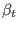
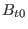
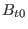
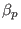
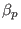

Next: Why bigger tokamaks with Up: The constraint of force-balance Previous: Efficiency of tokamak magnetic
Beta limit means there is a limit for the value of beta beyond which the
plasma will encounter a serious disruption. Early calculation of the beta
limit on JET shows that the maximal  obtained is proportional to
 for
, where
is the plasma current in mega Ampere,
for
, where
is the plasma current in mega Ampere,  is the plasma minor
radius in meter,  is the toroidal magnetic field in Tesla. This
scaling relation
is often called
Troyon scaling. This scaling relation motivates the definition a normalized
beta,
is the plasma minor
radius in meter,  is the toroidal magnetic field in Tesla. This
scaling relation
is often called
Troyon scaling. This scaling relation motivates the definition a normalized
beta,  , which is defined by
, which is defined by
(check** The tearing mode, specifically the neoclassical tearing mode (NTM) is expected to set the beta limit in a reactor.)
(**check: Tokamak experiments have found that it is easier to achieve high
 in large
in large  plasmas than in small
plasmas than in small  plasmas. However,
experiments found it is easier to achieve high  in small
plasmas. However,
experiments found it is easier to achieve high  in small  plasmas than in large
plasmas than in large  plasmas. Examining the expression of
plasmas. Examining the expression of  and
given by Eqs. (90) and Eq. (92),
respectively, we recognize that pressure limit should have a scaling of
with
. )
and
given by Eqs. (90) and Eq. (92),
respectively, we recognize that pressure limit should have a scaling of
with
. )
Tokamak experiments have also found that it is easier to achieve higher
in low  plasmas than in higher
plasmas than in higher  plasmas, which indicates
that the efficiency of the magnetic field in confining plasma is a decreasing
function of the magnitude of the magnetic field.
plasmas, which indicates
that the efficiency of the magnetic field in confining plasma is a decreasing
function of the magnitude of the magnetic field.